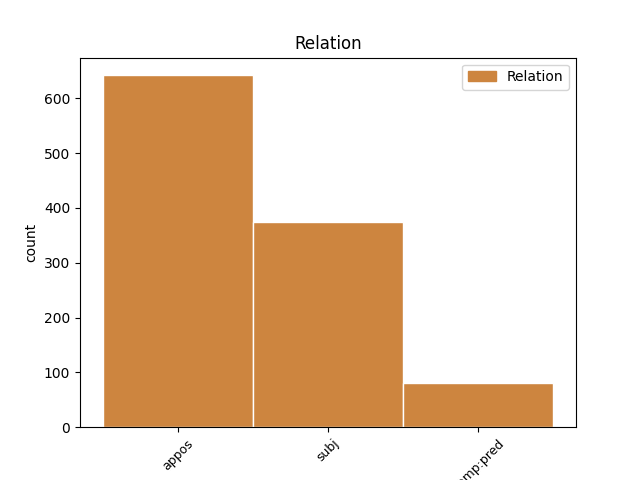
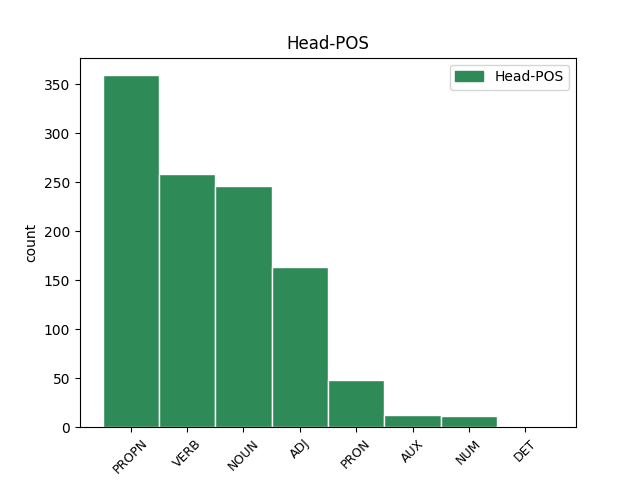
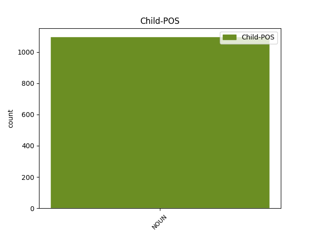

Distribution of features within this leaf



Agreement Rules sorted by frequency.
- When the dependent token is the appositional modifier(appos) of the head token, and the head token is PROPN and the dependent token is NOUN.
1 at _ _ _ _ 0 _ _ _
2 isdem _ _ _ _ 0 _ _ _
3 temporibus _ _ _ _ 0 _ _ _
4 in _ _ _ _ 0 _ _ _
5 Marco _ _ _ _ 0 _ _ _
6 Scauro _ _ _ _ 0 _ _ _
7 et _ _ _ _ 0 _ _ _
8 in _ _ _ _ 0 _ _ _
9 Marco Marcus PROPN Ne Case=Abl|Gender=Masc|Number=Sing 0 _ _ _
10 Druso _ _ _ _ 0 _ _ _
11 adulescente adulescens NOUN Nb Case=Abl|Gender=Masc|Number=Sing 9 appos _ ref=1.108
12 singularis _ _ _ _ 0 _ _ _
13 severitas _ _ _ _ 0 _ _ _
14 in _ _ _ _ 0 _ _ _
15 Gaio _ _ _ _ 0 _ _ _
16 Laelio _ _ _ _ 0 _ _ _
17 multa _ _ _ _ 0 _ _ _
18 hilaritas _ _ _ _ 0 _ _ _
19 in _ _ _ _ 0 _ _ _
20 eius _ _ _ _ 0 _ _ _
21 familiari _ _ _ _ 0 _ _ _
22 Scipione _ _ _ _ 0 _ _ _
23 ambitio _ _ _ _ 0 _ _ _
24 maior _ _ _ _ 0 _ _ _
25 vita _ _ _ _ 0 _ _ _
26 tristior _ _ _ _ 0 _ _ _
1 Vacandum _ _ _ _ 0 _ _ _
2 autem _ _ _ _ 0 _ _ _
3 omni _ _ _ _ 0 _ _ _
4 est _ _ _ _ 0 _ _ _
5 animi _ _ _ _ 0 _ _ _
6 perturbatione perturbatio NOUN Nb Case=Abl|Gender=Fem|Number=Sing 0 _ _ _
7 cum _ _ _ _ 0 _ _ _
8 cupiditate cupiditas NOUN Nb Case=Abl|Gender=Fem|Number=Sing 6 appos _ ref=1.69
9 et _ _ _ _ 0 _ _ _
10 metu _ _ _ _ 0 _ _ _
11 tum _ _ _ _ 0 _ _ _
12 etiam _ _ _ _ 0 _ _ _
13 aegritudine _ _ _ _ 0 _ _ _
14 et _ _ _ _ 0 _ _ _
15 voluptate _ _ _ _ 0 _ _ _
16 nimia _ _ _ _ 0 _ _ _
17 et _ _ _ _ 0 _ _ _
18 iracundia _ _ _ _ 0 _ _ _
19 ut _ _ _ _ 0 _ _ _
20 tranquillitas _ _ _ _ 0 _ _ _
21 animi _ _ _ _ 0 _ _ _
22 et _ _ _ _ 0 _ _ _
23 securitas _ _ _ _ 0 _ _ _
24 adsit _ _ _ _ 0 _ _ _
25 quae _ _ _ _ 0 _ _ _
26 affert _ _ _ _ 0 _ _ _
27 cum _ _ _ _ 0 _ _ _
28 constantiam _ _ _ _ 0 _ _ _
29 tum _ _ _ _ 0 _ _ _
30 etiam _ _ _ _ 0 _ _ _
31 dignitatem _ _ _ _ 0 _ _ _
1 quarum _ _ _ _ 0 _ _ _
2 una _ _ _ _ 0 _ _ _
3 communis _ _ _ _ 0 _ _ _
4 est _ _ _ _ 0 _ _ _
5 ex _ _ _ _ 0 _ _ _
6 eo _ _ _ _ 0 _ _ _
7 quod _ _ _ _ 0 _ _ _
8 omnes _ _ _ _ 0 _ _ _
9 participes _ _ _ _ 0 _ _ _
10 sumus _ _ _ _ 0 _ _ _
11 rationis _ _ _ _ 0 _ _ _
12 praestantiae _ _ _ _ 0 _ _ _
13 que _ _ _ _ 0 _ _ _
14 eius _ _ _ _ 0 _ _ _
15 qua _ _ _ _ 0 _ _ _
16 antecellimus _ _ _ _ 0 _ _ _
17 bestiis _ _ _ _ 0 _ _ _
18 a _ _ _ _ 0 _ _ _
19 qua _ _ _ _ 0 _ _ _
20 omne _ _ _ _ 0 _ _ _
21 honestum _ _ _ _ 0 _ _ _
22 decorum _ _ _ _ 0 _ _ _
23 que _ _ _ _ 0 _ _ _
24 trahitur _ _ _ _ 0 _ _ _
25 et _ _ _ _ 0 _ _ _
26 ex _ _ _ _ 0 _ _ _
27 qua _ _ _ _ 0 _ _ _
28 ratio _ _ _ _ 0 _ _ _
29 inveniendi invenio VERB V- Case=Gen|Gender=Neut|Number=Sing|VerbForm=Gdv 0 _ _ _
30 officii officium NOUN Nb Case=Gen|Gender=Neut|Number=Sing 29 subj _ ref=1.107
31 exquiritur _ _ _ _ 0 _ _ _
32 altera _ _ _ _ 0 _ _ _
33 autem _ _ _ _ 0 _ _ _
34 quae _ _ _ _ 0 _ _ _
35 proprie _ _ _ _ 0 _ _ _
36 singulis _ _ _ _ 0 _ _ _
37 est _ _ _ _ 0 _ _ _
38 tributa _ _ _ _ 0 _ _ _
1 in _ _ _ _ 0 _ _ _
2 primis _ _ _ _ 0 _ _ _
3 que _ _ _ _ 0 _ _ _
4 versutum versutus ADJ A- Case=Nom|Degree=Pos|Gender=Neut|Number=Sing 0 _ _ _
5 et _ _ _ _ 0 _ _ _
6 callidum _ _ _ _ 0 _ _ _
7 factum factum NOUN Nb Case=Nom|Gender=Neut|Number=Sing 4 subj _ ref=1.108
8 Solonis _ _ _ _ 0 _ _ _
9 qui _ _ _ _ 0 _ _ _
10 quo _ _ _ _ 0 _ _ _
11 et _ _ _ _ 0 _ _ _
12 tutior _ _ _ _ 0 _ _ _
13 eius _ _ _ _ 0 _ _ _
14 vita _ _ _ _ 0 _ _ _
15 esset _ _ _ _ 0 _ _ _
16 et _ _ _ _ 0 _ _ _
17 plus _ _ _ _ 0 _ _ _
18 aliquanto _ _ _ _ 0 _ _ _
19 rei _ _ _ _ 0 _ _ _
20 publicae _ _ _ _ 0 _ _ _
21 prodesset _ _ _ _ 0 _ _ _
22 furere _ _ _ _ 0 _ _ _
23 se _ _ _ _ 0 _ _ _
24 simulavit _ _ _ _ 0 _ _ _
1 Quam _ _ _ _ 0 _ _ _
2 multa _ _ _ _ 0 _ _ _
3 passus _ _ _ _ 0 _ _ _
4 est _ _ _ _ 0 _ _ _
5 Ulixes _ _ _ _ 0 _ _ _
6 in _ _ _ _ 0 _ _ _
7 illo _ _ _ _ 0 _ _ _
8 errore _ _ _ _ 0 _ _ _
9 diuturno _ _ _ _ 0 _ _ _
10 cum _ _ _ _ 0 _ _ _
11 et _ _ _ _ 0 _ _ _
12 mulieribus _ _ _ _ 0 _ _ _
13 si _ _ _ _ 0 _ _ _
14 Circe _ _ _ _ 0 _ _ _
15 et _ _ _ _ 0 _ _ _
16 Calypso _ _ _ _ 0 _ _ _
17 mulieres mulier NOUN Nb Case=Nom|Gender=Fem|Number=Plur 18 comp:pred _ ref=1.113
18 appellandae appello VERB V- Case=Nom|Gender=Fem|Number=Plur|VerbForm=Gdv 0 _ _ _
19 sunt _ _ _ _ 0 _ _ _
20 inserviret _ _ _ _ 0 _ _ _
21 et _ _ _ _ 0 _ _ _
22 in _ _ _ _ 0 _ _ _
23 omni _ _ _ _ 0 _ _ _
24 sermone _ _ _ _ 0 _ _ _
25 omnibus _ _ _ _ 0 _ _ _
26 affabilem _ _ _ _ 0 _ _ _
27 esse _ _ _ _ 0 _ _ _
28 se _ _ _ _ 0 _ _ _
29 vellet _ _ _ _ 0 _ _ _
1 Pugnatum _ _ _ _ 0 _ _ _
2 est _ _ _ _ 0 _ _ _
3 diu _ _ _ _ 0 _ _ _
4 atque _ _ _ _ 0 _ _ _
5 acriter _ _ _ _ 0 _ _ _
6 cum _ _ _ _ 0 _ _ _
7 Sotiates _ _ _ _ 0 _ _ _
8 superioribus _ _ _ _ 0 _ _ _
9 victoriis _ _ _ _ 0 _ _ _
10 freti _ _ _ _ 0 _ _ _
11 in _ _ _ _ 0 _ _ _
12 sua _ _ _ _ 0 _ _ _
13 virtute _ _ _ _ 0 _ _ _
14 totius _ _ _ _ 0 _ _ _
15 Aquitaniae _ _ _ _ 0 _ _ _
16 salutem _ _ _ _ 0 _ _ _
17 positam _ _ _ _ 0 _ _ _
18 putarent _ _ _ _ 0 _ _ _
19 nostri _ _ _ _ 0 _ _ _
20 autem _ _ _ _ 0 _ _ _
21 quid _ _ _ _ 0 _ _ _
22 sine _ _ _ _ 0 _ _ _
23 imperatore _ _ _ _ 0 _ _ _
24 et _ _ _ _ 0 _ _ _
25 sine _ _ _ _ 0 _ _ _
26 reliquis _ _ _ _ 0 _ _ _
27 legionibus _ _ _ _ 0 _ _ _
28 adulescentulo adulescentulus NOUN Nb Case=Abl|Gender=Masc|Number=Sing 29 subj _ ref=3.19.1
29 duce dux NOUN Nb Case=Abl|Gender=Masc|Number=Sing 0 _ _ _
30 efficere _ _ _ _ 0 _ _ _
31 possent _ _ _ _ 0 _ _ _
32 perspici _ _ _ _ 0 _ _ _
33 cuperent _ _ _ _ 0 _ _ _
1 praestate _ _ _ _ 0 _ _ _
2 eandem _ _ _ _ 0 _ _ _
3 nobis nos PRON Pp Case=Dat|Gender=Masc|Number=Plur|Person=1|PronType=Prs 0 _ _ _
4 ducibus dux NOUN Nb Case=Dat|Gender=Masc|Number=Plur 3 appos _ ref=6.8.4
5 virtutem _ _ _ _ 0 _ _ _
6 quam _ _ _ _ 0 _ _ _
7 saepe _ _ _ _ 0 _ _ _
8 numero _ _ _ _ 0 _ _ _
9 imperatori _ _ _ _ 0 _ _ _
10 praestitistis _ _ _ _ 0 _ _ _
11 atque _ _ _ _ 0 _ _ _
12 illum _ _ _ _ 0 _ _ _
13 adesse _ _ _ _ 0 _ _ _
14 et _ _ _ _ 0 _ _ _
15 haec _ _ _ _ 0 _ _ _
16 coram _ _ _ _ 0 _ _ _
17 cernere _ _ _ _ 0 _ _ _
18 existimate _ _ _ _ 0 _ _ _
1 Quibus _ _ _ _ 0 _ _ _
2 autem _ _ _ _ 0 _ _ _
3 talis _ _ _ _ 0 _ _ _
4 nulla _ _ _ _ 0 _ _ _
5 sit _ _ _ _ 0 _ _ _
6 causa _ _ _ _ 0 _ _ _
7 si _ _ _ _ 0 _ _ _
8 despicere _ _ _ _ 0 _ _ _
9 se _ _ _ _ 0 _ _ _
10 dicant _ _ _ _ 0 _ _ _
11 ea is ADJ Pd Case=Acc|Gender=Neut|Number=Plur 0 _ _ _
12 quae _ _ _ _ 0 _ _ _
13 plerique _ _ _ _ 0 _ _ _
14 mirentur _ _ _ _ 0 _ _ _
15 imperia imperium NOUN Nb Case=Acc|Gender=Neut|Number=Plur 11 appos _ ref=1.71
16 et _ _ _ _ 0 _ _ _
17 magistratus _ _ _ _ 0 _ _ _
18 iis _ _ _ _ 0 _ _ _
19 non _ _ _ _ 0 _ _ _
20 modo _ _ _ _ 0 _ _ _
21 non _ _ _ _ 0 _ _ _
22 laudi _ _ _ _ 0 _ _ _
23 verum _ _ _ _ 0 _ _ _
24 etiam _ _ _ _ 0 _ _ _
25 vitio _ _ _ _ 0 _ _ _
26 dandum _ _ _ _ 0 _ _ _
27 puto _ _ _ _ 0 _ _ _
1 sed _ _ _ _ 0 _ _ _
2 tibi _ _ _ _ 0 _ _ _
3 venire _ _ _ _ 0 _ _ _
4 in _ _ _ _ 0 _ _ _
5 mentem _ _ _ _ 0 _ _ _
6 certo _ _ _ _ 0 _ _ _
7 scio _ _ _ _ 0 _ _ _
8 quae _ _ _ _ 0 _ _ _
9 vita _ _ _ _ 0 _ _ _
10 esset _ _ _ _ 0 _ _ _
11 nostra _ _ _ _ 0 _ _ _
12 quae _ _ _ _ 0 _ _ _
13 suavitas _ _ _ _ 0 _ _ _
14 quae qui PRON Pi Case=Nom|Gender=Fem|Number=Sing|PronType=Int 0 _ _ _
15 dignitas dignitas NOUN Nb Case=Nom|Gender=Fem|Number=Sing 14 subj _ ref=3.20.1
1 Si _ _ _ _ 0 _ _ _
2 ita _ _ _ _ 0 _ _ _
3 fecisset _ _ _ _ 0 _ _ _
4 sibi _ _ _ _ 0 _ _ _
5 populo _ _ _ _ 0 _ _ _
6 que _ _ _ _ 0 _ _ _
7 Romano _ _ _ _ 0 _ _ _
8 perpetuam _ _ _ _ 0 _ _ _
9 gratiam gratia NOUN Nb Case=Acc|Gender=Fem|Number=Sing 14 subj _ ref=1.35.4
10 atque _ _ _ _ 0 _ _ _
11 amicitiam _ _ _ _ 0 _ _ _
12 cum _ _ _ _ 0 _ _ _
13 eo _ _ _ _ 0 _ _ _
14 futuram sum AUX V- Case=Acc|Gender=Fem|Number=Sing|Tense=Fut|VerbForm=Part|Voice=Act 0 _ _ _
1 cuius _ _ _ _ 0 _ _ _
2 partes _ _ _ _ 0 _ _ _
3 duae duo NUM Ma Case=Nom|Gender=Fem|Number=Plur 0 _ _ _
4 iustitia iustitia NOUN Nb Case=Nom|Gender=Fem|Number=Sing 3 appos _ ref=1.20
5 in _ _ _ _ 0 _ _ _
6 qua _ _ _ _ 0 _ _ _
7 virtutis _ _ _ _ 0 _ _ _
8 est _ _ _ _ 0 _ _ _
9 splendor _ _ _ _ 0 _ _ _
10 maximus _ _ _ _ 0 _ _ _
11 ex _ _ _ _ 0 _ _ _
12 qua _ _ _ _ 0 _ _ _
13 viri _ _ _ _ 0 _ _ _
14 boni _ _ _ _ 0 _ _ _
15 nominantur _ _ _ _ 0 _ _ _
16 et _ _ _ _ 0 _ _ _
17 huic _ _ _ _ 0 _ _ _
18 coniuncta _ _ _ _ 0 _ _ _
19 beneficentia _ _ _ _ 0 _ _ _
20 quam _ _ _ _ 0 _ _ _
21 eandem _ _ _ _ 0 _ _ _
22 vel _ _ _ _ 0 _ _ _
23 benignitatem _ _ _ _ 0 _ _ _
24 vel _ _ _ _ 0 _ _ _
25 liberalitatem _ _ _ _ 0 _ _ _
26 appellari _ _ _ _ 0 _ _ _
27 licet _ _ _ _ 0 _ _ _
1 Itaque _ _ _ _ 0 _ _ _
2 eorum _ _ _ _ 0 _ _ _
3 consilio _ _ _ _ 0 _ _ _
4 saepe _ _ _ _ 0 _ _ _
5 aut _ _ _ _ 0 _ _ _
6 non _ _ _ _ 0 _ _ _
7 suscepta _ _ _ _ 0 _ _ _
8 aut _ _ _ _ 0 _ _ _
9 confecta _ _ _ _ 0 _ _ _
10 bella _ _ _ _ 0 _ _ _
11 sunt _ _ _ _ 0 _ _ _
12 non _ _ _ _ 0 _ _ _
13 numquam _ _ _ _ 0 _ _ _
14 etiam _ _ _ _ 0 _ _ _
15 illata infero VERB V- Aspect=Perf|Case=Nom|Gender=Neut|Number=Plur|Tense=Past|VerbForm=Part|Voice=Pass 0 _ _ _
16 ut _ _ _ _ 0 _ _ _
17 Marci _ _ _ _ 0 _ _ _
18 Catonis _ _ _ _ 0 _ _ _
19 bellum bellum NOUN Nb Case=Nom|Gender=Neut|Number=Sing 15 appos _ ref=1.79
20 tertium _ _ _ _ 0 _ _ _
21 Punicum _ _ _ _ 0 _ _ _
22 in _ _ _ _ 0 _ _ _
23 quo _ _ _ _ 0 _ _ _
24 etiam _ _ _ _ 0 _ _ _
25 mortui _ _ _ _ 0 _ _ _
26 valuit _ _ _ _ 0 _ _ _
27 auctoritas _ _ _ _ 0 _ _ _
1 cuius _ _ _ _ 0 _ _ _
2 partes pars NOUN Nb Case=Nom|Gender=Fem|Number=Plur 3 subj _ ref=1.20
3 duae duo NUM Ma Case=Nom|Gender=Fem|Number=Plur 0 _ _ _
4 iustitia _ _ _ _ 0 _ _ _
5 in _ _ _ _ 0 _ _ _
6 qua _ _ _ _ 0 _ _ _
7 virtutis _ _ _ _ 0 _ _ _
8 est _ _ _ _ 0 _ _ _
9 splendor _ _ _ _ 0 _ _ _
10 maximus _ _ _ _ 0 _ _ _
11 ex _ _ _ _ 0 _ _ _
12 qua _ _ _ _ 0 _ _ _
13 viri _ _ _ _ 0 _ _ _
14 boni _ _ _ _ 0 _ _ _
15 nominantur _ _ _ _ 0 _ _ _
16 et _ _ _ _ 0 _ _ _
17 huic _ _ _ _ 0 _ _ _
18 coniuncta _ _ _ _ 0 _ _ _
19 beneficentia _ _ _ _ 0 _ _ _
20 quam _ _ _ _ 0 _ _ _
21 eandem _ _ _ _ 0 _ _ _
22 vel _ _ _ _ 0 _ _ _
23 benignitatem _ _ _ _ 0 _ _ _
24 vel _ _ _ _ 0 _ _ _
25 liberalitatem _ _ _ _ 0 _ _ _
26 appellari _ _ _ _ 0 _ _ _
27 licet _ _ _ _ 0 _ _ _
1 Quod _ _ _ _ 0 _ _ _
2 si _ _ _ _ 0 _ _ _
3 praeterea _ _ _ _ 0 _ _ _
4 nemo _ _ _ _ 0 _ _ _
5 sequatur _ _ _ _ 0 _ _ _
6 tamen _ _ _ _ 0 _ _ _
7 se _ _ _ _ 0 _ _ _
8 cum _ _ _ _ 0 _ _ _
9 sola _ _ _ _ 0 _ _ _
10 decima _ _ _ _ 0 _ _ _
11 legione _ _ _ _ 0 _ _ _
12 iturum _ _ _ _ 0 _ _ _
13 de _ _ _ _ 0 _ _ _
14 qua _ _ _ _ 0 _ _ _
15 non _ _ _ _ 0 _ _ _
16 dubitet _ _ _ _ 0 _ _ _
17 sibi _ _ _ _ 0 _ _ _
18 que _ _ _ _ 0 _ _ _
19 eam _ _ _ _ 0 _ _ _
20 praetoriam _ _ _ _ 0 _ _ _
21 cohortem cohors NOUN Nb Case=Acc|Gender=Fem|Number=Sing 22 comp:pred _ ref=1.40.15
22 futuram sum AUX V- Case=Acc|Gender=Fem|Number=Sing|Tense=Fut|VerbForm=Part|Voice=Act 0 _ _ _
1 competitores competitor NOUN Nb Case=Nom|Gender=Masc|Number=Plur 6 subj _ ref=1.1.1
2 qui _ _ _ _ 0 _ _ _
3 certi _ _ _ _ 0 _ _ _
4 esse _ _ _ _ 0 _ _ _
5 videantur _ _ _ _ 0 _ _ _
6 Galba Galba PROPN Ne Case=Nom|Gender=Masc|Number=Sing 0 _ _ _
7 et _ _ _ _ 0 _ _ _
8 Antonius _ _ _ _ 0 _ _ _
9 et _ _ _ _ 0 _ _ _
10 Quintus _ _ _ _ 0 _ _ _
11 Cornificius _ _ _ _ 0 _ _ _
Disagree Examples:
1 vox vox NOUN Nb Case=Nom|Gender=Fem|Number=Sing 0 _ _ _
2 in _ _ _ _ 0 _ _ _
3 Rama _ _ _ _ 0 _ _ _
4 audita _ _ _ _ 0 _ _ _
5 est _ _ _ _ 0 _ _ _
6 ploratus ploratus NOUN Nb Case=Nom|Gender=Masc|Number=Sing 1 appos _ ref=MATT_2.18
7 et _ _ _ _ 0 _ _ _
8 ululatus _ _ _ _ 0 _ _ _
9 multus _ _ _ _ 0 _ _ _
1 et _ _ _ _ 0 _ _ _
2 tulerunt _ _ _ _ 0 _ _ _
3 reliquias reliquiae NOUN Nb Case=Acc|Gender=Fem|Number=Plur 0 _ _ _
4 duodecim _ _ _ _ 0 _ _ _
5 cofinos cofinus NOUN Nb Case=Acc|Gender=Masc|Number=Plur 3 appos _ ref=MATT_14.20
6 fragmentorum _ _ _ _ 0 _ _ _
7 plenos _ _ _ _ 0 _ _ _
1 sine _ _ _ _ 0 _ _ _
2 causa _ _ _ _ 0 _ _ _
3 autem _ _ _ _ 0 _ _ _
4 colunt _ _ _ _ 0 _ _ _
5 me _ _ _ _ 0 _ _ _
6 docentes _ _ _ _ 0 _ _ _
7 doctrinas doctrina NOUN Nb Case=Acc|Gender=Fem|Number=Plur 0 _ _ _
8 mandata mandatum NOUN Nb Case=Acc|Gender=Neut|Number=Plur 7 appos _ ref=MATT_15.9
9 hominum _ _ _ _ 0 _ _ _
1 ut _ _ _ _ 0 _ _ _
2 quid quis PRON Pi Case=Nom|Gender=Neut|Number=Sing|PronType=Int 0 _ _ _
3 perditio perditio NOUN Nb Case=Nom|Gender=Fem|Number=Sing 2 subj _ ref=MATT_26.8
4 haec _ _ _ _ 0 _ _ _
1 et _ _ _ _ 0 _ _ _
2 acceperunt _ _ _ _ 0 _ _ _
3 triginta _ _ _ _ 0 _ _ _
4 argenteos argenteus ADJ A- Case=Acc|Degree=Pos|Gender=Masc|Number=Plur 0 _ _ _
5 pretium pretium NOUN Nb Case=Acc|Gender=Neut|Number=Sing 4 appos _ ref=MATT_27.9
6 adpretiati _ _ _ _ 0 _ _ _
7 quem _ _ _ _ 0 _ _ _
8 adpretiaverunt _ _ _ _ 0 _ _ _
9 a _ _ _ _ 0 _ _ _
10 filiis _ _ _ _ 0 _ _ _
11 Israhel _ _ _ _ 0 _ _ _